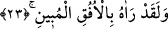

etmektedir. Çünkü bu vasıflarla bezenmiş olan Cebrâil, Peygamber Efendimiz’i
desteklemekte ve ona ilahi mesajı getirmektedir. Bir insanla arşın sâhibi arasında ona
bu derece yakın bir meleğin elçi olarak gelip gittiği belli olduktan sonra acaba
Peygamber Efendimiz için bu mertebeden daha üstün bir mertebe var mıdır?
Sâdî Müftî der ki: Âyetin getiriliş sebebi -ifâdenin başında yer alan fâ-i sebebiyyenin
de delalet ettiği üzere- zikredilen korkunç kıyamet sahnelerinin doğru olduğunu
göstermek içindir. Kuşkusuz bu o âyetleri getiren elçinin nitelenmesini gerektirir. Bu
nedenle âyetin inmiş olduğu Peygamber Efendimiz’in değil de, ona Kur’an’ı getiren
Cebrâil’in vasıflarının üzerinde büyük bir titizlikle durulmuştur. İşte maksad bu olduğu
için Peygamber Efendimiz açısından sâdece onların iftira ettikleri hususun doğru
olmadığının ifâde edilmesiyle yetinilmiştir.
Bu âyet-i kerimede ruhun mecnun olmayacağına işâret edilmektedir. Bir başka
ifâdeyle burada ruhun Kur’an’ın hakikatlerini, ince anlamlarını, ahkâmını, şeriat
hükümlerini, vaadini ve tehdidini anlamayacak biçimde algılama duyularının kapalı
olmadığına, tam tersine Kur’an’ın bütün esrarının ruha açık olduğuna işâret vardır.
23. Andolsun ki, onu (Cebrâil’i) apaçık ufukta görmüştür.
Allah’a andolsun ki Peygamber (s.a.) Cebrâil’i apaçık ufukta görmüştür. Aynu’l-
maânî’de ifâde olunduğuna göre Peygamberimiz (s.a.) Cebrâil’i kendi sûretinde değil,
başka bir sûrette görmüştür.
Âyette yer alan “ufuk” kelimesinden maksad, semânın en uzak noktasıdır.
“el-Mubîn” ifâdesi zâhir oldu, ortaya çıktı anlamına gelen “ebâne” fiilinden
türemedir. Buna göre Peygamber Efendimiz, Cebrâil’i doğu tarafında güneşin doğduğu
en yüksek kısımda görmüş olmaktadır. Burada “ufuk” kelimesinden maksad, güneşin
doğduğu yöndür. Bunu aynı âyette yer alan “mübîn” vasfından çıkarıyoruz. Çünkü ufuğun
bizzat kendisi eşyayı ortaya çıkarıp aydınlatamaz. Ufuk eşyayı ancak herşeyi aydınlatan
büyük gezegenin doğduğu yer olursa aydınlatabilir. Bu büyük gezegen ise güneştir.
Güneşin doğduğu yere “aydınlanma” kelimesinin isnâd edilmesi mecazdır. Çünkü o
aydınlanmanın sebebi genelde güneştir. “Beyân” kökü aslında ufuktan doğan ışık için
kullanılır. Öte yandan bunca doğum yeri arasında en yüksek ve en yukarda olanı
zikredilmiştir. Bu da güneşin doğduğu ufuktur. Çünkü güneş o esnâda en yukarda ve gün
de en uzun durumunda olmuş olur. Güneşin bu duruma gelmesi aslan burcuna geçmeden
az önce yengeç burcunun tepesinde olduğu andır. Güneş yengeç burcundan kayıp aslan
burcuna geçince günler kısalmaya başlar.
Bütün bu ifâde “mubîn” kelimesinin en mükemmele yorumlanması için yapılmıştır.
Gökteki güneş gezegeni en yüksek ve en yüce yerde iken ve gündüzleri en uzun durumda